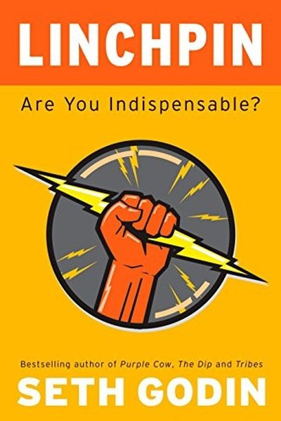

Library › Creativity
Linchpin — Summary & Key Lessons

Are you indispensable? The art of being the person the organization can't live without.
📖 OPEN THE FULL INTERACTIVE BREAKDOWN →🌐 Read it in Hindi, Hinglish, Gujarati, Tamil & 22 more languages — free, with audio.
💡 The Big Idea
The industrial age rewarded obedience: follow the manual, do your job, get paid. That era is over — cogs are replaceable and cheap. The new economy pays a premium for linchpins: people who bring gifts no manual can replicate — creativity, emotional labor, connection, art. Godin's challenge: stop trying to be a better cog and start being indispensable. Give gifts, embrace your art, and the market will reward you.
🧠 The 6 Key Lessons
Lesson 1: The Cog Is Dead
The New World of Work
Factories needed interchangeable workers — cogs who followed instructions. Every system (school, office, bureaucracy) trained us to be cogs. But globalization and automation made cogs cheap. The market now rewards people who can do what machines and manuals cannot: original thinking, emotional connection, and gifts.
📖 Example: Call-center workers who follow scripts are outsourced and automated; the representative who genuinely makes a customer feel cared for — improvising, listening, connecting — becomes indispensable and irreplaceable. Read the full example →
⚡ Do this: Find the task in your work where you currently follow a manual. Write down one way to do it with your own judgment and heart instead.
Lesson 2: Emotional Labor Is a Gift
Emotional Labor
Most valuable work isn't physical — it's emotional labor: making someone feel safe, understood, delighted. When you choose to smile, listen, empathize and care — not because a manual says so, but because you choose it — you give a gift that can't be automated. That gift is the core of the linchpin's value.
📖 Example: A hotel housekeeper who leaves a hand-written welcome note, or a flight attendant who remembers a nervous flier's name — these small emotional gifts turn transactions into relationships and create loyalty no system can copy. Read the full example →
⚡ Do this: Today, give one unprompted gift of emotional labor: a sincere compliment, a note, a moment of full attention to a customer or colleague.
Lesson 3: Ship Your Art
The Resistance
Art is any act that creates something new — a presentation, a process, a product, a moment. Art is scary because it invites judgment. The linchpin's habit is to ship anyway: put the work out, let it be seen, learn, repeat. Shipping is the only way art becomes valuable.
📖 Example: Godin's own daily blog — thousands of posts, most imperfect — shipped relentlessly, built an audience, and made him one of the most influential marketers alive. Volume and courage beat occasional perfection. Read the full example →
⚡ Do this: Pick one piece of work you've been hiding. Give it a public deadline this week and ship it — imperfect is fine.
Lesson 4: The Resistance Wants You Safe
Resistance
The lizard brain hates change, risk and judgment — it whispers 'wait', 'it's not ready', 'they'll laugh'. That resistance is the surest sign you're doing something that matters. Linchpins feel the same fear as everyone; they just act anyway. Fear is the price of admission to work worth doing.
📖 Example: Every nervous public speaker, entrepreneur and artist Godin describes feels the same inner voice — and the ones who succeed are those who recognize it as a sign, not a stop sign. Read the full example →
⚡ Do this: Name the fear that's holding your current project back. Write it down, then take the first step that makes it real today.
Lesson 5: Be Remarkable or Be Invisible
The Culture of Work
Average is over: doing your job well is now table stakes, not a differentiator. Linchpins make themselves remarkable — someone whose presence changes the outcome. They take on the projects nobody wants, solve the problems nobody owns, and become the person others route work through.
📖 Example: The engineer who fixes the broken process nobody was assigned to, the assistant who makes the CEO's day flow better — these people become indispensable not because of their title but because of what they make happen. Read the full example →
⚡ Do this: Find one invisible problem at work that nobody owns. Claim it this week — even small.
Lesson 6: Wherever You Are, Be There
The Last Chapter
Presence is a gift. When you give someone your full attention — no phone, no hurry, no agenda — you create connection that machines can't fake. The linchpin's final skill is simple: show up fully. Presence builds trust, and trust is the foundation of every indispensable relationship.
📖 Example: Godin's simple rule for meetings and conversations: put the phone away and actually listen. People remember how you made them feel far more than what you said. Read the full example →
⚡ Do this: In your next conversation, put your phone away, make eye contact, and ask one question you genuinely want answered.
✅ 5-Step Action Plan
- Identify one place where you're a cog — and one way to add your own judgment there.
- Give one unprompted emotional gift today.
- Ship one piece of hidden work this week.
- Name your fear and take the first real step anyway.
- Be fully present in every conversation today.
⚠️ When This Doesn't Work
Godin's 'become indispensable' is the most liberating career book ever — and Beepi is the warning that indispensability has a market price: the used-car marketplace was built by the most indispensable people in its industry — brilliant operators, perfect execution, a service people loved — and the company died anyway because the unit economics were structurally broken. Being indispensable to a broken system makes you the most valuable person in a sinking ship. Godin's advice is right for individuals; the caveat is to check what you're indispensable TO. The ship you're keeping afloat matters more than your skill at keeping it afloat.
💀 The Graveyard Proves It
🚙 Beepi — $150M Used-Car Marketplace, $17M/Month Burn. Burn: $150M. Read the full case study →
💬 Best Quotes from Linchpin
- “The only way to get what you're worth is to stand out, to exert emotional labor, to be seen as indispensable.”
- “Your art is what you do when no one can tell you exactly how to do it.”
- “Wherever you are, be there.”
Interactive version: mark lessons as read, listen in your language, share quote cards.